What can I do with a JupyterLab environment ?#
When you first open the JupyterLab environment, you'll be presented with a JupyterLab interface. This is a web-based interface that allows you to interact with the JupyterLab environment.
This page will guide you through how to navigate the JupyterLab environment and its features with the following sections:
If you are unsure how to get to this interface, please see the JupyterLab page.
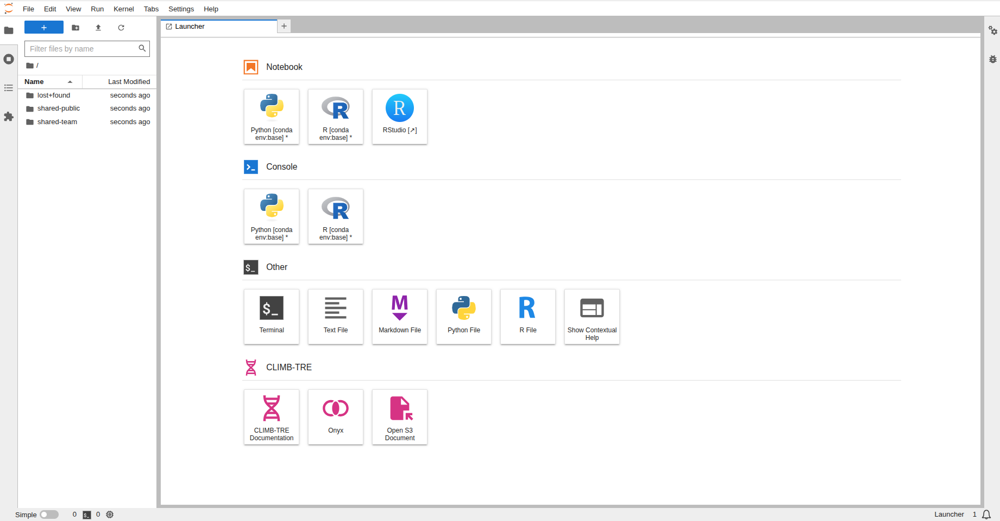
JupyterLab terminology#
To avoid confusion, here are a few similar but different terms that we use throughout the CLIMB documentation:
- JupyterLab - the next-generation user interface including a file browser, a terminal, an RStudio extension, as well as Jupyter Notebooks and Nextflow access.
- Jupyter Notebook - a powerful and popular tool within the interface for interactive computing, data analysis, and data visualisation.
We highly recommend spending a few moments familiarising yourself with the basic JupyterLab interface. Follow the steps below and head to the JupyterLab interface docs for more detailed information on using the interface.
Before we start there are a few terms which you might not be familiar with;
-
Console: run code interactively in a kernel.
-
Kernel: separate processes which run different coding languages and environments.
-
Notebooks: Jupyter notebooks (.ipynb files) which can be run with different coding languages through kernels.
The JupyterLab interface#
The JupyterLab interface consists of 3 main components; the menu bar, sidebar and main work area.
-
Menu bar: where you can select interface actions (File, Edit, View, Run etc.).
-
Sidebar: where you can access the file browser.
-
Main work area: where you can place all your open tabs and arrange them as you like.
An overview of what you can do in each component will be explained below:
Menu bar#
Here you can select different actions relating to different aspects of the interface:
-
File: Actions for files and folders
-
Edit: Actions for editing documents
-
View: Actions to change the appearance of JupyterLab
-
Run: Actions for code within notebooks and consoles
-
Kernel: Actions for managing kernels
-
Tabs: List of open documents and activities
-
Settings: Common and advanced settings management
-
Help: A list of helpful links
Sidebar#
Here you can easily access and navigate the file system to create, upload, download and manage files and directories.
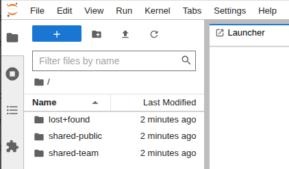
Your home directory /home/jovyan (~) serves as the default/base location for the file browser. You will automatically have the following directories mounted to your home directory:
- lost+found
- shared-public
- shared-team
For more detailed information on CLIMBs storage options see our Storage page.
Warning
Please be aware that your home directory is not a safe place for storage, you should use the shared-team directory or S3 buckets for your data and databases. If your home directory is full, you will not be able to launch new JupyterLab environments.
Main work area#
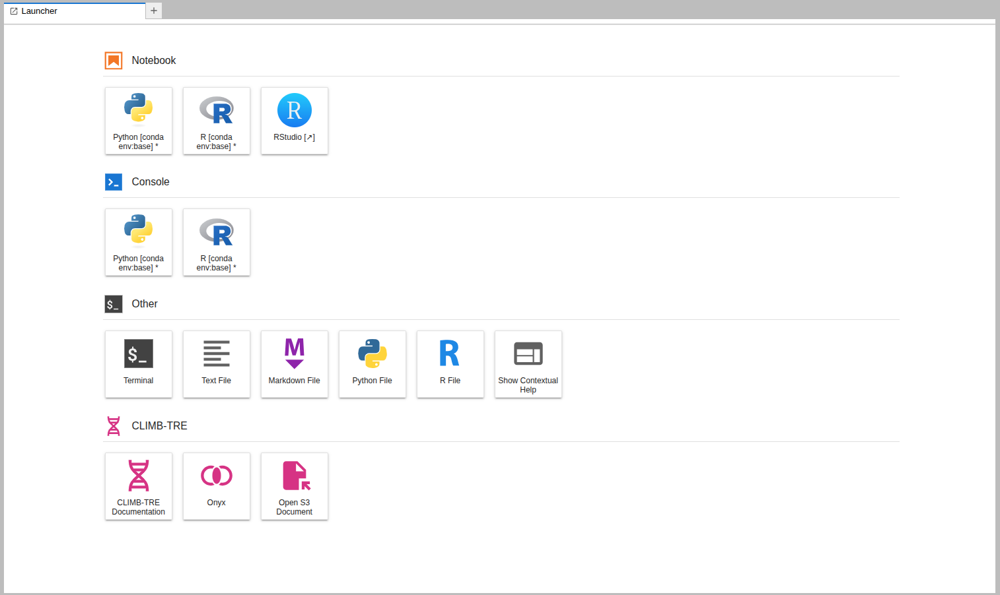
Within the main work area you can start different analysis through the launcher. Clicking on one of these tiles will open a new tab in the activity area. Each new activity starts a new kernel, a separate processes which allows you to use different programming languages/features as a new tab.
The Main Work Area launcher is separated into 4 sections; Notebook, Console, Other and CLIMB-TRE. Each section contains shortcuts to launch different applications:
Notebook#
This section includes shortcuts to launch Jupyter notebooks using both python and R kernels. It also allows users to launch the RStudio extension.
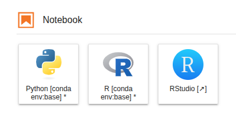
For more information on using Jupyter notebooks, see our Jupyter Notebooks page.
For more information on using R and RStudio, see our RStudio page.
Console#
This section includes shortcuts to launch code (python, R) interactively in a kernel.
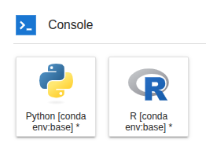
Other#
This section includes shortcuts to create a new terminal session, new files (text, markdown, python, R) and access contextual help.
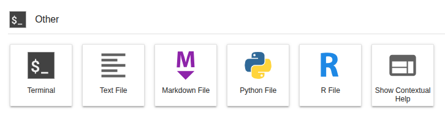
For more information on using the terminal, see our Terminal page.
For more information on using Nextflow via the terminal, see our Nextflow page.
Info
Please note that when you install a new environment via conda, it will appear as new tiles in the Notebook and Console sections.
CLIMB-TRE#
The CLIMB Trusted Research Environment (CLIMB-TRE) is a package specific project.
This sections includes shortcuts for specific use cases and is not relevant for the majority of users. This includes CLIMB-TRE documentation, Onyx access and S3 documents.
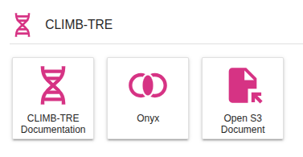
Using the interface#
You can have multiple tabs open in the activity area:
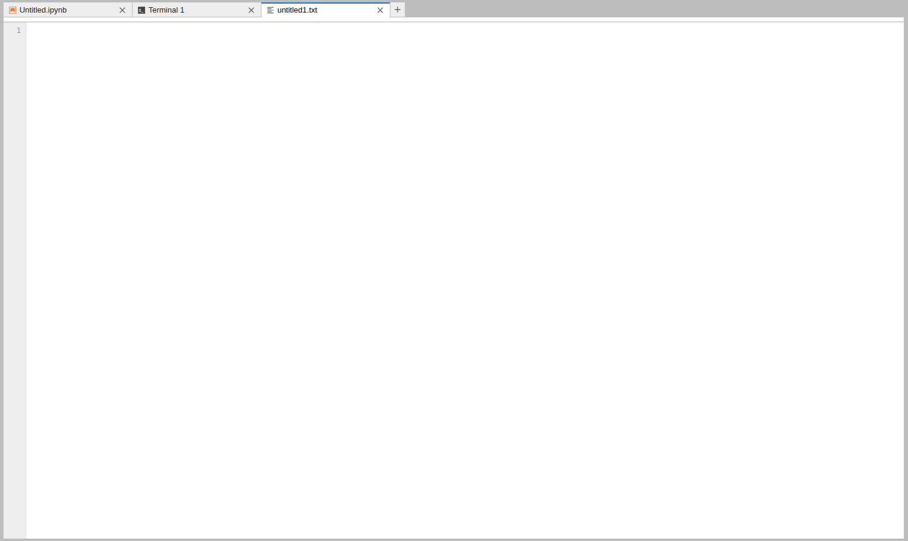
You can drag and drop tabs in the activity area to rearrange them:
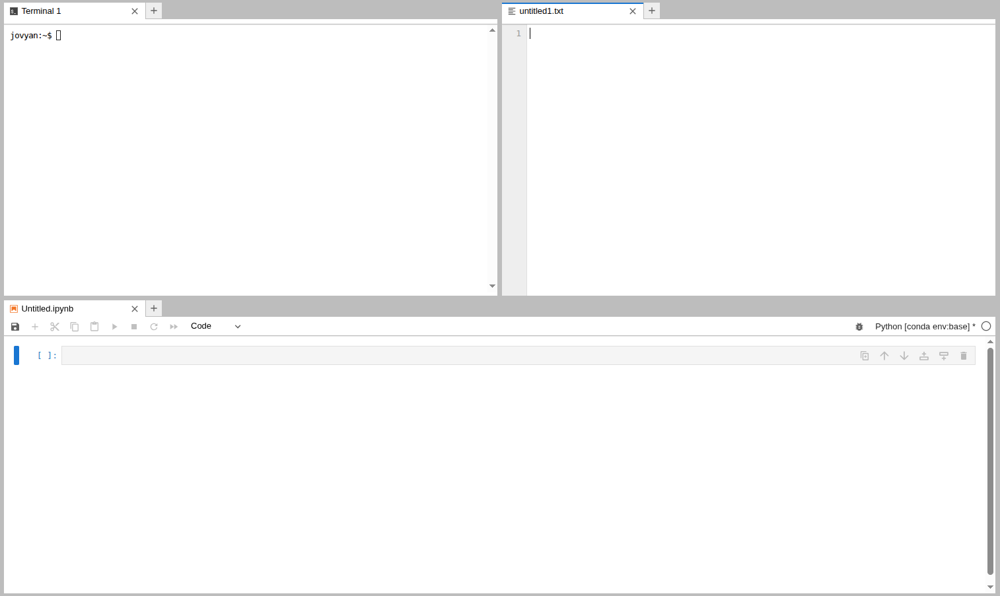
You can also drag and drop files from the file browser into the activity area to open them in the appropriate application.
Tabs can be resized or subdivided, just drag a tab to the center of a tab panel to move the tab to the panel. Subdivide a tab panel by dragging a tab to the left, right, top, or bottom of the panel.
To create a new tab, click the + icon in the top right of the activity area, or use File > New Launcher. Ctrl+Shift+L
Tip
With everything accessible in one place, there is no need for a single user to have access to multiple JupyterLab environments from Bryn. You can have all your work running in tandem in one JupyterLab environment.
Manage kernels and terminals#
When you close a notebook or terminal from the main work area, it will still continue to run. To manage them you can use the sidebar.
You can close running kernels or terminals individually or use the Shut Down All button:
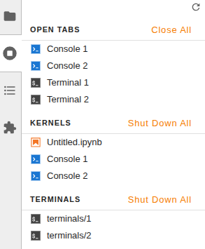
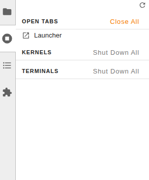
What is next ?#
Once you are familiar with the JupyterLab interface, have a look at how storage is integrated with the interface on our Storage page.
You can also have a look at our documentation dedicated to using the terminal, Jupyter notebooks, RStudio and Nextflow.